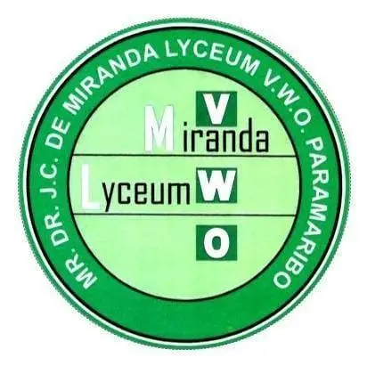

I'm a builder from Paramaribo, Suriname — combining management experience with a passion for technology to create things that matter.
ICT student, developer in progress, and former manager.
I'm Muhammad Abdoel, a first-year ICT student at UNASAT (University of Applied Science and Technology) in Paramaribo, Suriname. My journey into technology didn't start in a classroom — it started in the real world, where I spent over two years working in management roles across three different companies.
That professional background gave me something most developers don't have early on: a deep understanding of how organisations actually work. I know what it means to coordinate teams, manage operations, and solve real business problems. Now I'm combining that with the technical skills I'm building in my ICT studies to become a developer who doesn't just write code — but understands the impact behind it.
When I'm not studying or coding, I love gaming, watching football, and spending time with family and friends. I grew up in Suriname and that background shapes how I see the world — practical, community-minded, and always looking for ways to help. Building things that actually make people's lives easier is what drives me.
The academic foundation that shaped my thinking and launched my technical journey.
Currently in my first year of the ICT program at the University of Applied Science and Technology (UNASAT). Building a strong foundation in information technology, programming, networking, and digital systems, while applying real-world experience from my professional background.
First Year — In ProgressCompleted a bridging year (schakeljaar) in Accountancy at Anton de Kom Universiteit van Suriname. This year strengthened my academic and analytical foundation and prepared me for higher education in ICT.
Completed
Attended Mr. Dr. J.C. de Miranda Lyceum for five years, building the academic and analytical skills that laid the groundwork for my future studies in technology.
CompletedThe technologies I've learned and worked with so far in my ICT studies and projects.